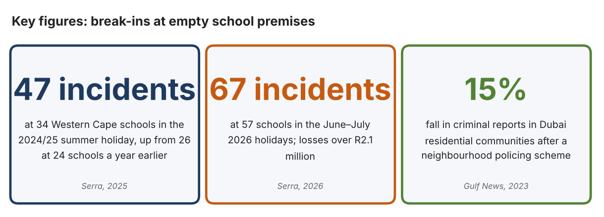
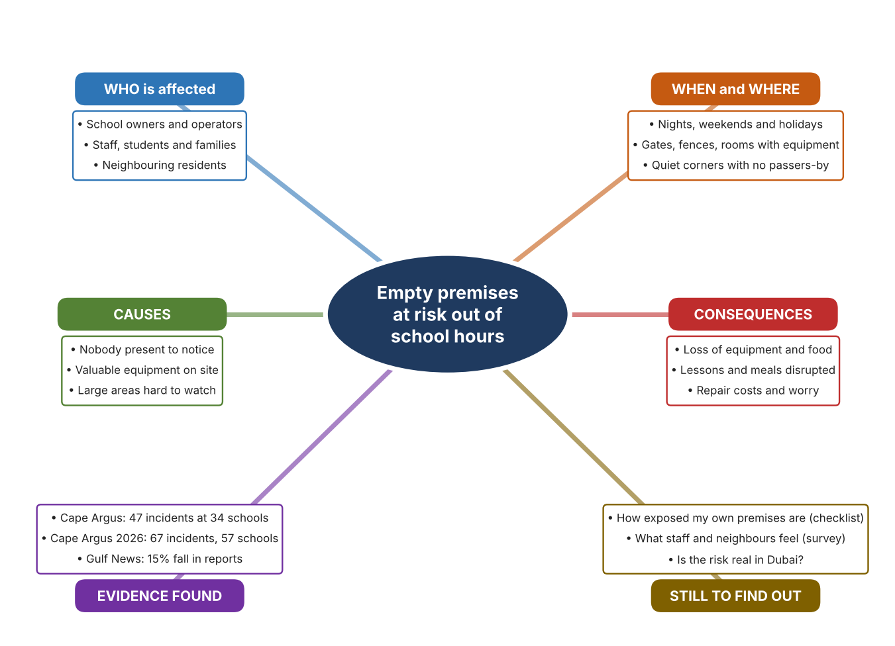
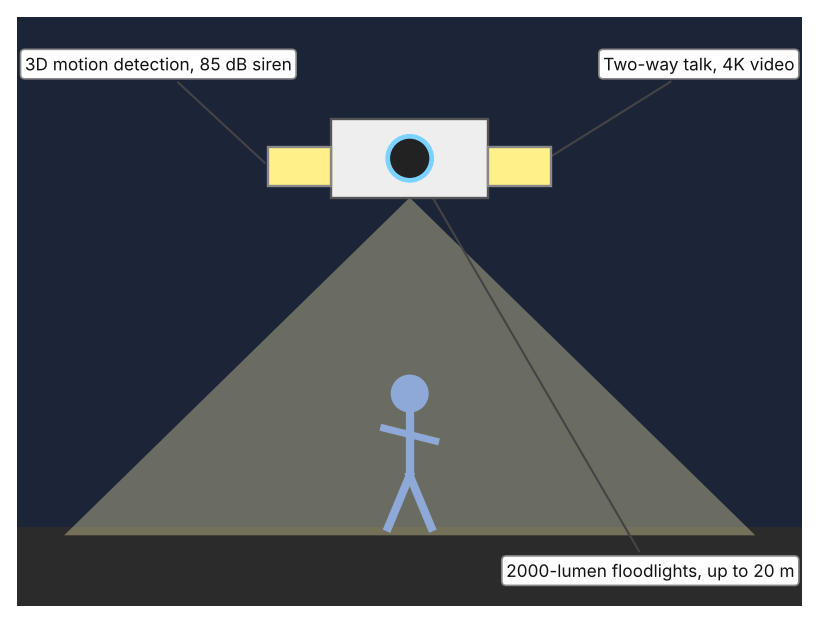
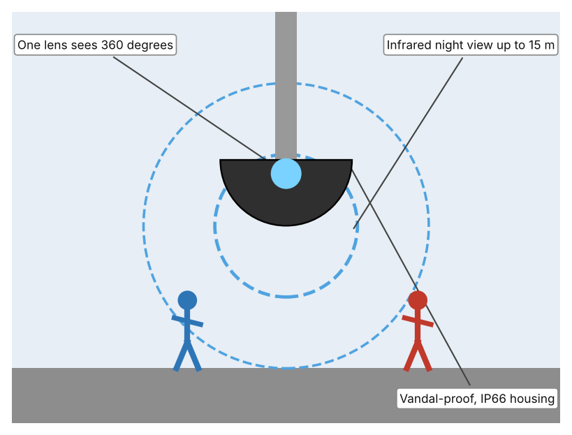
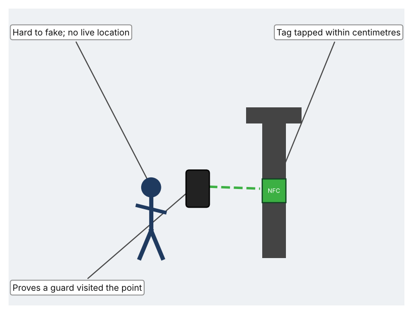

A1 · Design need
Identify and explain the problem faced by your client and community.
My client is the Facilities and Operations Manager of a school in Dubai (a fictional client created for this task). The school's buildings, equipment and grounds are empty for much of the week, because they stand unused at night, at weekends and during holidays. The manager is responsible for everything on the site, and is concerned that nobody would notice if someone entered at those times. The client needs the premises to stay protected when nobody is there to watch them.
The people affected go well beyond the manager. The school owners and operators carry the cost of any loss, and staff and students depend on the equipment, classrooms and kitchens being ready each morning. Families trust the school with their children and their fees. Neighbouring residents are also affected, because a site that is easy to enter can become a problem for the whole area.
The need is supported by evidence from other countries. In the Western Cape of South Africa, schools reported 47 break-ins at 34 schools during the 2024/25 summer holiday, compared with 26 at 24 schools a year before (Serra, “School Burglaries”). In the June and July 2026 holidays there were 67 incidents at 57 schools, with losses of more than R2.1 million, and thieves targeted nutrition kitchens, computer rooms, cabling and air conditioning (Serra, “Western Cape Schools”). In Dubai, a 2023 report credits a neighbourhood policing scheme with a 15% fall in criminal reports in residential communities (Gulf News). I treat this evidence with care: the first two sources are not from the UAE, and the Dubai report does not give school figures.
Figure 1 summarises these figures. In my own words, an empty building is only safe while nobody tries to enter it, and the harm continues after the event because lessons, meals and budgets are disrupted. What I do not yet know is how exposed my own school and community are, and I will gather that evidence with an observation checklist and a short survey. Figure 2 is my mind map of the problem.
341 words


A2 · Research plan
Six research questions of different types, each with a priority, a research type and evidence.
| # | Question | Priority | Primary / secondary | Evidence | Brief answer |
|---|---|---|---|---|---|
| 1 | Factual: How common are break-ins at empty schools, and what is taken? | High | Secondary | Serra, 2025 and 2026 (Appendix A, Sources 1 and 2) | Western Cape holidays: 47 incidents at 34 schools (2024/25) and 67 at 57 schools (2026). Targets include kitchens, computer rooms, cabling, CCTV, air conditioning and gas cylinders; losses over R2.1 million. |
| 2 | Factual: What do UAE sources say about crime prevention in residential areas? | High | Secondary | Gulf News, 2023 and 2018 (Appendix A, Sources 3 and 4) | A 15% fall in reports in Dubai communities in 2023 was attributed to a neighbourhood policing scheme; in 2018 police added patrols near banks and shops. Neither source gives school break-in totals. |
| 3 | Conceptual: Why are empty premises easy to enter, and how can an intrusion be noticed or deterred? | Medium | Secondary | TrackForce, 2026; Ring support page; Hikvision listing (Appendix A, Sources 5, 6 and 7) | With nobody present, nobody sees an entry. Ways of noticing include lights and sirens triggered by movement, wide-view recording, and proof that a guard visited each point. |
| 4 | Debatable: Should the protection of empty premises depend on people, on equipment, or on the design of the site? | Medium | Secondary | Appendix A, Sources 2, 3, 5, 6 and 7 | People can judge a situation but cannot be everywhere; equipment works all night but can fail; design such as lighting and fencing helps but does not tell anyone an entry has happened. My view: combine them. |
| 5 | Debatable (challenges my assumption, UAE source): Dubai has low crime, so is protecting school premises out of hours still a problem? | High | Secondary | Gulf News, 2023 and 2018 (Appendix A, Sources 3 and 4) | Reports in Dubai communities are falling, which suggests the risk is lower, but the 2023 report still counts about 1,400 cases and relies on active policing. The South African data are not UAE data, so my own observation and survey must show whether the risk is real here. |
| 6 | Factual (primary): How exposed are our school premises out of hours, and how safe do people feel? | High | Primary | Own premises checklist and survey (Appendix A, Sources 8 and 9) | [Student data needed: write the checklist counts and survey averages (with permission from the school), then two sentences on the pattern you see.] |
A3 · Existing products
Three significantly different products, each analysed with ACCESS FM, with pros and cons.
Product 1: Outdoor floodlight camera (Ring Floodlight Cam 4K Pro)

Illustration by the author based on the Ring Floodlight Cam 4K Pro support page (Appendix A, Source 5). [Student: replace with a photo from the source, cited MLA 9]
Product 2: 360-degree fisheye camera (Hikvision HVCD6332FWIV)

Illustration by the author based on the Adorama listing for the Hikvision HVCD6332FWIV (Appendix A, Source 6). [Student: replace with a photo from the source, cited MLA 9]
Product 3: Checkpoint tags for guard rounds (NFC)

Illustration by the author based on TrackForce, “What Is Checkpoint Verification?” (Appendix A, Source 7). [Student: replace with a photo from the source, cited MLA 9]
ACCESS FM analysis
| ACCESS FM | Product 1 | Product 2 | Product 3 |
|---|---|---|---|
| Aesthetics | Floodlight and camera in one fixture; the support page gives no description of looks. | Low, domed housing designed to be unobtrusive; the listing gives no description of looks. | Small tags that fix to walls or posts; the article does not describe looks. |
| Cost | Price not stated on the support page; person and vehicle detection needs a subscription. | Price not shown; the listing says the product is no longer available. | Price not stated; every point needs a tag, so large sites need many. |
| Customer | Property owners who want a visible deterrent and live view on a phone. | Sites that need one view of a wide area, for example a yard or car park. | Security staff who must prove their rounds; needs a person to do the rounds. |
| Environment | Hardwired; works from -20.5 to 48.5 °C; IP65 weather rating. | Powered by PoE or 12 V DC; IP66; vandal-proof. | Tags need no power; the reader needs a charged device. |
| Size | 22.3 × 32.7 × 19.8 cm; field of view 140 degrees. | One lens gives a 1536 × 1536 image at 30 frames per second. | Tags are small enough to place anywhere; the reading distance is a few centimetres. |
| Safety | Siren of 85 dB at 1 m and bright light may startle an intruder. Bystander view: light and noise also affect neighbours. | Infrared lets it see at night. Bystander view: it records passers-by as well as intruders. | NFC is the hardest checkpoint method to fake. Bystander view: does not record anyone. |
| Function | Detects motion in 3D, lights up, sounds a siren and lets the owner talk through it. | Records a full panoramic view and shows all directions at once. | Records which points were tapped and when, so a missed point can be seen. |
| Materials | Materials are not described on the support page. | Vandal-proof housing; materials not stated. | Materials are not stated. |
Pros and cons
| Product 1 | Product 2 | Product 3 | |
|---|---|---|---|
| Pro | Light, siren and voice together can deter, and 4K video gives clear evidence. | One camera covers a whole area at night, so fewer devices are needed. | Hardest method to fake and needs no camera, so it keeps privacy. |
| Con | Needs wiring and a subscription for person detection; it only covers what it faces. | Listing says it is no longer available, and it only records; someone must watch. | Does not show where a guard is in real time and needs a person to carry out the rounds. |
A4 · Design brief
Restate the need, summarise the research and the existing products, and state the design intent.
My client, the Facilities and Operations Manager of a school in Dubai, needs the premises to stay protected when nobody is there to watch them. The problem is documented elsewhere: Western Cape schools reported 47 break-ins at 34 schools in the 2024/25 summer holiday and 67 at 57 schools in the 2026 holidays, with losses above R2.1 million (Appendix A, Sources 1 and 2). In Dubai, reports in residential communities fell by 15% after a neighbourhood policing scheme (Appendix A, Source 3).
My research shows that the main weakness is that nobody is present to notice an entry, and that kitchens, computer rooms and cabling are the usual targets (Appendix A, Sources 1 and 2). My debatable questions led me to conclude that people, equipment and site design each solve only part of the problem. My challenged assumption was that Dubai's low crime makes the issue unimportant; the 2023 and 2018 reports show that crime is being reduced through active effort, not that the risk has gone (Appendix A, Sources 3 and 4). Because the school data come from South Africa, I will test the risk locally with my premises checklist and survey, always with permission (Appendix A, Sources 8 and 9).
I analysed three very different existing solutions. An outdoor floodlight camera has an 85 dB siren and 3D motion detection, but it needs wiring and a subscription for person detection (Appendix A, Source 5). A 360-degree fisheye camera sees every direction with infrared up to 15 m, but it only records and the listing is no longer available (Appendix A, Source 6). Checkpoint tags prove a guard's rounds and are hard to fake, but they give no live location and large sites need many tags (Appendix A, Source 7). They give me ideas for inspiration: warn and deter, record everything, and prove that someone checked. Each has a gap that another covers.
My design intent is therefore to create a solution that helps to protect school premises when nobody is present, by helping people to notice or discourage unwanted entry. It must be reliable at night and in the heat, affordable for a school, respectful of the privacy of staff, students and neighbours, and simple to maintain. I have deliberately not fixed what form it will take. That decision will be made in Criterion B, after I analyse my own checklist and survey against the evidence in Appendix A.
401 words
Appendix A · Research notes and sources
Secondary sources in MLA 9, with notes and where each source is used.
| # | Source (MLA 9) | Key notes | Used in |
|---|---|---|---|
| 1 | Serra, Genevieve. “School Burglaries Nearly Double in Western Cape despite Enhanced Security.” Cape Argus, 27 Jan. 2025, www.capeargus.co.za/news/2025-01-27-school-burglaries-nearly-double-in-western-cape-despite-enhanced-security. Accessed 21 Oct. 2026. | 2024/25 summer holiday: 47 incidents at 34 schools, against 26 at 24 schools in 2023/24; 480 schools had subsidised holiday security; items stolen include electrical fixtures, appliances, food and security equipment. South African data. | A1; A2 Q1 and Q4; A4. |
| 2 | Serra, Genevieve. “Western Cape Schools Face R2.1 Million Loss due to Burglary and Vandalism.” IOL, 28 Jul. 2026, www.iol.co.za/capeargus/news/2026-07-28-western-cape-schools-face-r21-million-loss-due-to-burglary-and-vandalism/. Accessed 21 Oct. 2026. | June/July 2026: 67 incidents at 57 schools, losses over R2.1 million; kitchens and computer rooms targeted; night security caught suspects. South African data. | A1; A2 Q1 and Q4; A4. |
| 3 | “15% Drop in Criminal Reports at Dubai's Residential Communities.” Gulf News, 11 Jan. 2023, gulfnews.com/uae/15-drop-in-criminal-reports-at-dubais-residential-communities-1.93155110. Accessed 21 Oct. 2026. | 15% fall attributed to the Policeman in Your Neighbourhood scheme; about 1,400 cases; more than 800 volunteers. No school figures. | A1; A2 Q2, Q4 and Q5; A4. |
| 4 | Al Shouk, Ali. “Police Take Steps to Prevent Crimes in Dubai.” Gulf News, 5 Nov. 2018, gulfnews.com/uae/government/police-take-steps-to-prevent-crimes-in-dubai-1.2267697. Accessed 21 Oct. 2026. | 2,126 suspects arrested in the first half of the year; extra patrols near banks, petrol stations and grocers to deter car robberies. Old source; no theft totals. | A2 Q2 and Q5; A4. |
| 5 | “Floodlight Cam Pro (2nd Gen).” Ring Support, ring.com/gb/en/support/products/cameras/floodlight-cam-pro-2nd-gen. Accessed 21 Oct. 2026. | 4K video; 2000-lumen floodlights up to 20 m; 3D motion detection; 85 dB siren; hardwired; IP65; -20.5 to 48.5 °C; 22.3 × 32.7 × 19.8 cm; person and vehicle detection needs a subscription. | A2 Q3 and Q4; A3 Product 1; A4. |
| 6 | “Hikvision HVCD6332FWIV 3MP Outdoor Fisheye Camera.” Adorama, www.adorama.com/hvcd6332fwiv.html. Accessed 21 Oct. 2026. | 360-degree view; 1536 × 1536 at 30 fps; infrared to 15 m; IP66; vandal-proof; PoE or 12 V DC; listed as no longer available. | A2 Q3 and Q4; A3 Product 2; A4. |
| 7 | “What Is Checkpoint Verification? NFC vs QR vs GPS Compared.” TrackForce, 31 Aug. 2026, www.trackforce.com/resources/blog-articles/what-is-checkpoint-verification-nfc-vs-qr-vs-gps-compared/. Accessed 21 Oct. 2026. | NFC tag tapped within centimetres; hardest method to fake; no live location; large areas need many tags; GPS accuracy about 15–20 m. | A2 Q3 and Q4; A3 Product 3; A4. |
| 8 | Primary: premises checklist, completed by the student on [date]. Accessed own data. | [Student: summarise your counts.] | A2 primary question; A4. |
| 9 | Primary: survey of [number] people, completed on [date]. | [Student: summarise your averages.] | A2 primary question; A4. |
Primary research instrument 1: premises checklist
Student completes the checklist with the facilities manager's permission, by day, from outside areas only.
| Area | Lit at night (Y/N) | Visible from road (Y/N) | Hidden corner (Y/N) | Camera or guard visible (Y/N) | Notes |
|---|---|---|---|---|---|
| Main gate | |||||
| Perimeter fence | |||||
| Car park | |||||
| Side or rear door |
Primary research instrument 2: survey
Rate each statement from 1 (strongly disagree) to 5 (strongly agree). Collect responses with permission and record no names.
| Statement | 1 | 2 | 3 | 4 | 5 | Total responses |
|---|---|---|---|---|---|---|
| I feel the school premises are safe when nobody is there. | ||||||
| Someone would notice quickly if a person entered at night. | ||||||
| The school's outer areas are well lit after dark. | ||||||
| I worry about equipment being taken from the school. |